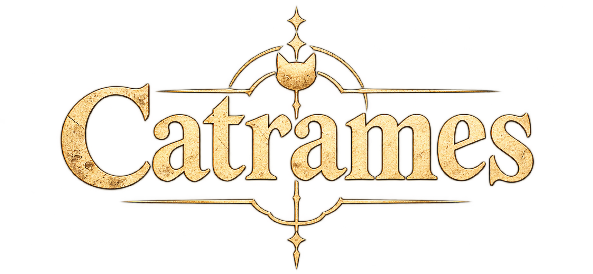
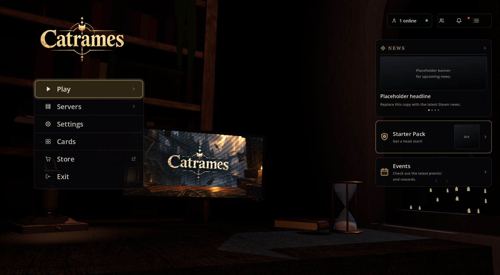
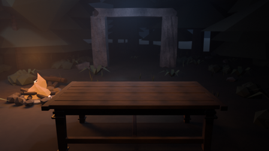
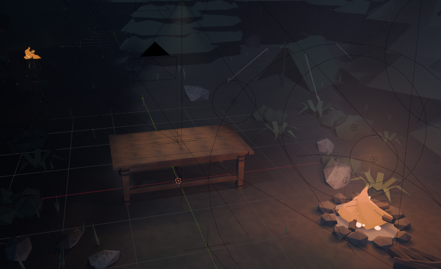
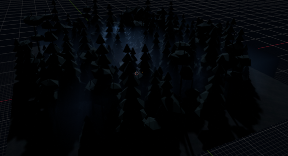
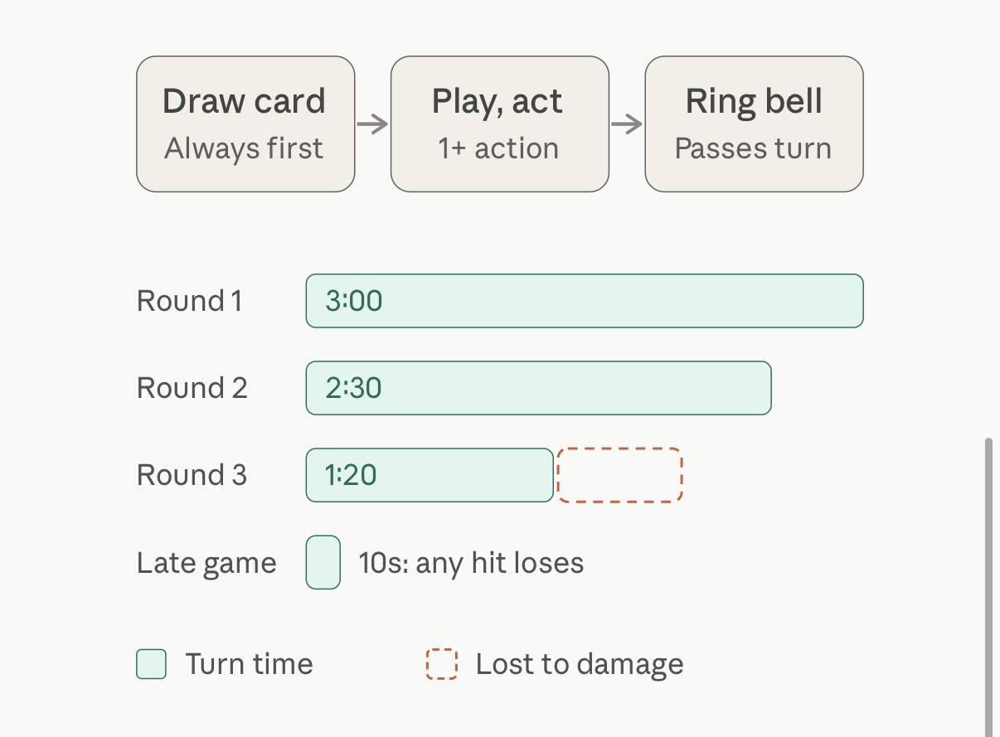

The core loop
Draw from either the Main Deck or the unlimited Filler Deck. Spend Souls by sacrificing units, place your cards on a 4 × 4 battlefield, then use attacks, items and abilities before ringing the Desk Bell.

A RECORD OF UNCERTAIN ORIGINThere are notes about a game called Catrames.
No original copy has been recovered. The few people who remember it disagree on the rules, the artwork, and whether they ever played it at all.
We have decided to leave the record as it is.
The cards were real. I think. There was one with a mark on it, though nobody could agree what the mark meant.
Some details may have been altered by the process of remembering.
VIEW CORRECTION ↗There is no evidence that this page was here yesterday.
A DARK RETRO-HORROR TACTICAL CARD GAME
Catrames is a real-time tactical card game played across a physical 3D table. Players sacrifice units, manage shrinking turn time and fight to break an opponent's Soul Orb before the table goes quiet.
Draw from either the Main Deck or the unlimited Filler Deck. Spend Souls by sacrificing units, place your cards on a 4 × 4 battlefield, then use attacks, items and abilities before ringing the Desk Bell.
Every round and every point of damage makes the next turn shorter. The Soul Orb records the loss with cracks, colour and shaking feedback. At ten seconds, another hit can end the match.
The team is building a strange, low-detail space inspired by PS1-era horror, CRT interference and haunted tabletop games. It should feel tactile, readable and slightly unreliable.
The project first presents itself through the main menu: the Catrames identity, navigation and the first glimpse of the world around the player.

After the menu, the player enters the physical game location: a wooden table, a campfire, a dark forest and a place to begin the match.

With the location established, the team tested scale, composition and the empty space surrounding the play area.

Low-detail trees, fog and limited light shaped the PS1-inspired visual language around the match.

The logo, title screen and CRT treatment became the final layer: a game that feels like a recovered object from another machine.
The board is split into front and back rows. A turn always begins with a draw, continues with at least one action, and ends when the player rings the bell. As rounds pass, the available time shrinks until an exposed hit can break the Soul Orb.

Each player controls two rows of four slots. Attacks move through the front row first; an unblocked hit reaches the Soul Orb.

Players must draw first and make at least one action before passing the turn. The timer drops from 3:00 as the match progresses; at 10 seconds, any hit loses the game.